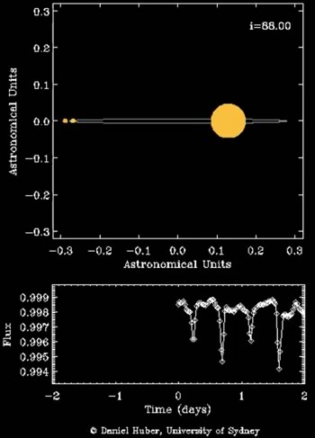
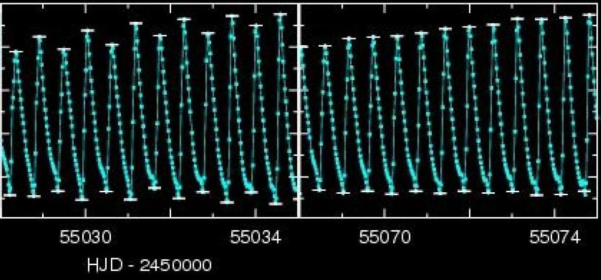

Hol keressük a vizes holdakat?
Nemcsak exobolygókon, hanem azok holdjain is kialakulhat a földihez hasonló élet, és ennek egyik fontos feltétele, hogy legyen víz az égitesten. Arra voltunk kíváncsiak, hogy a bolygó körül miyen távolságban keringő holdakon valósulhat ez meg. A számításokhoz figyelembe vettük a csillagból érkező sugárzást, a holdat belülről felfűtő árapályfűtést, a bolygó felszínéről visszavert csillagfényt és a bolygó termális sugárzását is. A csillag körüli úgynevezett lakható zónában a Földhöz hasonló hold ugyanúgy lakható lehet, mint a bolygók, feltéve, hogy nem kering túlságosan közel bolygójához. Közeli holdpálya esetén ugyanis az erős árapályfűtés túlságosan felmelegíti az égitestet, és így annak vízkészlete elpárolog, a légkörben az UV sugárzás hatására hirdogénre és oxigénre bomlik, amiből a hidrogén könnyen elszökik az űrbe, így később, hidrogén hiányában már nem alakulhat ki újra vízmolekula. Az erős árapályfűtés tehát csak akkor kedvez az élet szempontjából, ha a bolygó-hold páros a központi csillagtól nagyobb távolságban kering, ahol már csak gyengébb csillagsugárzás éri őket. Ezt a változást térképeztük fel néhány reprezentatív csillagtömeg és holdtömeg esetére.
Dobos et al. 2017, A&A 601, A91
Alul: a bolygó körüli lakható zóna elhelyezkedése a csillagtól (x tengely) és a bolygótól (y tengely) való távolság függvényében. Az itt látható példában a csillag Nap-típusú, a bolygó Jupiter tömegű, a hold pedig a Földhöz hasonló. A narancsságra szín azokat eseteket mutatja, ahol az árapályfűtés különösen erős, az itt tartózkodó holdak geológiailag rendkívül aktívak lehetnek. Felül: a szemléletes ábrázolás azt mutatja, hogy a bolygó körüli lakható zóna (kék gyűrű) a csillagtól való távolsággal egyre közelebb kerül a bolygóhoz, és egyre szűkebb területet ölel fel.
Jeges exoholdak albedóbecslésének lehetősége
A Naprendszer holdjai közül elsősorban a jégpáncéllal borított holdakon kutatják az élet lehetőségét. Azt vizsgáltuk, hogy a következő generációs távcsövekkel meg tudnánk-e becsülni a jeges exoholdak albedóját, vagyis, hogy ki tudnánk-e válogatni a jeges holdakat a többi közül. Ehhez fotometriai mérések végzését javasoljuk a hold okkultációjakor. Számításaink során arra jutottunk, hogy ezzel a módszerrel a Naphoz hasonló csillagok esetén nem lehetséges a holdak albedóbecslése, de a jóval kisebb méretű vörös törpék sokkal ígéretesebb célpontok. Mivel az M törpék a közeli infravörös hullámhosszakon sugározzák a legtöbb energiát, ahol a jég még mindig nagyon fényes (bár nem annyira, mint a látható tartományban), ezért a J fotometriai sávban érdemes méréseket végezni a jeges exoholdak azonosításához. A következő generációs távcsövek fotonzaját megbecsülve arra a következtetésre jutottunk, hogy azokkal még a Földnél nagyobb, jeges felszínű exoholdak albedóbecslése is túl nagy kihívást jelent. A módszer azonban alkalmazható lesz a jövőben, amint rendelkezésre állnak a még jobb fotometriai pontosságot nyújtó műszerek.
Dobos et al. 2016, A&A 592, A139
Naphoz hasonló csillagok esetén a bolygó és a hold okkultációs görbéje általában egymásra rakódik ("a" eset), míg vörös törpecsillagoknál, azok jóval kisebb mérete miatt, általában elkülönül ("b" eset).
Gyorsan forgó csillag különös kísérővel
A KOI-13 rendszer lehetséges kinézete. A két gravitációsan kötött, gyorsan forgó szubóriás csillag egyike körül egy forró barna törpe kering.
A gyorsan forgó csillagok lapultak, pólusvidékük forróbb, mint az egyenlítőjük. Az ilyen csillag előtt ferde pályán elhaladó bolygók vagy kis méretű kísérők fényváltozása elméletileg jellegzetes torzulást mutat. Az első ilyen objektumot sikerült azonosítanunk a Kepler publikus adataiban. A KOI-13 rendszert két, a Napnál valamivel nagyobb tömegű csillag alkotja, és kimutattuk, hogy a Kepler által felfedezett tranzit a fényesebb csillaghoz tartozik. A ferde pályán keringő, fedést okozó égitest pedig egy barna törpe, azaz átmeneti objektum a bolygók és a csillagok között. A rendszer minden szempontból unikális: ilyen forró csillag körül nem ismertünk még kísérőt, ráadásul minden bizonnyal egy "forró barna törperől" van szó, amely szintén egyedülálló. Először sikerült kimutatni egy barna törpés kettős rendszerben a törpecsillag pályájának dőltségét a központi csillag forgástengelyéhez viszonyítva pusztán a nagyon pontos fényességmérések alapján, ez pedig a bolygókeletkezési és -vándorlási folyamatok fontos nyomjelzője. A jelenleg páratlan hármas konfiguráció fontos információt hordoz a csillagkeletkezési elméletek érvényességéről is a kis és közepes tömegű csillagok kialakulásában. Bővebb összefoglaló a hirek.csillagaszat.hu oldalán.
Szabó M. Gy. et al. 2011, ApJ, 736, L4
Torzulások egy gyorsan forgó csillag előtt áthaladó bolygó által okozott fénygörbén.
Triplán fedő csillaghármas felfedezése
Egyedülálló hármas csillagrendszert fedeztünk fel a Kepler-adatokban. A szakirodalomban mindeddig lényegében teljesen ismeretlen HD 181068 jelű, 7.1 magnitúdó fényességű csillagról 218 napnyi Kepler-megfigyelés, valamint földi spektroszkópiai és interferometriai mérések segítségével kimutattuk, hogy valójában egy olyan hármas rendszer, amelyben a legfényesebb főkomponens egy vörös óriáscsillag (HD 181068 A), körülötte pedig egy vörös törpékből álló szoros kettőscsillag kering (HD 181068 B és C). A felfedezést az tette lehetővé, hogy a vörös törpepár 45,5 naponta eltűnik a vörös óriás mögött, közben pedig kölcsönös fedéseket is mutat 0,9 napos periódussal. A hármas rendszernek nem hivatalosan a "Trinity" nevet adtuk, mely a Szentháromságra utal. A Trinityhez hasonló hierarchikus hármas rendszerek a csillagkeletkezés és -fejlődés fontos tesztobjektumai, a most talált csillag különleges konfigurációja pedig emberi időskálán is mérhető változásokat okoz a csillagok pályaelemeiben. Érdekes módon a szinte minden vörös óriáscsillagra jellemző naptípusú oszcillációk helyett a Trinity főcsillagánál a BC pár gerjesztette rezgésekre utaló jeleket találtunk. Lásd még a sajtónyilatkozatot.
Derekas et al. 2011, Science, 332, 216
A HD 181068 három komponense méretarányos ábrázolásban. Az A jelzésű csillag Napunknál 12,4-szer nagyobb vörös óriás, kísérői a Naptól kisebb törpecsillagok.
Illusztráció: D. Huber (Univ. of Sydney)

A HD 181068 rendszer mozgását és fényváltozását mutató animáció. A lejátszáshoz kattintás a képre. (Animáció: D. Huber, Univ. of Sydney)
Perióduskettőződés felfedezése RR Lyrae csillagokban
Az egyik legújabb eredményünk a perióduskettőződés felfedezése néhány Kepler RR Lyrae csillagban, köztük magának az RR Lyrae-nek, a típus névadójának a fényváltozásában. Ez az első eset, hogy ezt a dinamikai jelenséget RR Lyrae csillagokban valaha is megfigyelték. A perióduskettőződés váltakozó nagyságú maximumok és minimumok formájában jelentkezik, a frekvenciaspektrumban pedig a fő pulzációs frekvencia és harmonikusai között félúton jelentkező fél-egész frekvenciák utalnak a jelenlétére. Érdekes módon az összes periódus-kettőződést mutató csillag egyúttal Blazsko-modulált is. Az effektus a modulációs ciklus bizonyos fázisaiban erősebbnek mutatkozott. Ezek az eredmények a perióduskettőződés és a rejtélyes Blazsko-moduláció szoros kapcsolatára utalnak, így az új jelenség vizsgálata közelebb vihet az évszázados Blazsko-rejtély megoldásához is. Eredményeinket a NASA és a KASC sajtókonferenciáján is bemutatták Aarhusban (Dánia) 2010. október 26-án. (bővebben).
Kolenberg et al. 2010, ApJL, 713, 198
Szabó et al. 2010, MNRAS, 409, 1244
Perióduskettőződés az RR Lyrae nevű csillagban. Az ábrán az RR Lyrae 127 nap hosszúságú Kepler-fénygörbéje látható. Az egyedi pulzációs ciklusok nehezen különböztethetők meg, de feltűnő a kb. 40 nap hosszúságú Blazsko-moduláció. A perióduskettőződés az első két modulációs ciklus meghatározott fázisaiban jelentkezik legerősebben, de a harmadik ciklusban nem látszik. A pirossal kiemelt két szakasz kinagyítva a következő ábrán tekinthető meg.

Perióduskettőződés. Az RR Lyrae nevű csillag fénygörbéjének két szakasza látható, mégpedig azonos Blazsko-modulációs fázisnál. A moduláció miatt mindkét esetben nő a pulzáció amplitúdója. Azonban míg a bal oldali esetben erős perióduskettőződés látható, a másik esetben feltűnő ennek hiánya. Az eltérés oka ismeretlen.
A perióduskettőződés hidrodinamikai modellezése
A java azonban még csak ezután következett. A Florida-Budapest hidrokóddal sikerült reprodukálnunk a periódus-kétszerező bifurkációt nemlineáris RR Lyrae modellekben. Ez lehetővé tette, hogy megtaláljuk az RR Lyrae-kben fellépő perióduskettőződés okát. Bizonyítottuk, hogy a jelenség hátterében az alapmódus és a kilencedik radiális felhang között fellépő 9:2 arányú rezonancia áll. A magas rendű felhang egyben egy strange módus. A rezonancia meglepően erősnek bizonyult, annak ellenére, hogy ezen rezonanciák hatását mindeddig elhanyagolták. Az eredményeink arra mutatnak, hogy a radiális és feltehetően a nemradiális módusok is komplex kölcsönhatásokat mutathatnak, és ezek szerepet játszhatnak a Blazsko-effektus létrejöttében is.
Kolláth, Molnár, Szabó 2011, MNRAS, közlésre elfogadva
A modulált Kepler RR Lyrae csillagok kaleidoszkópja
Huszonkilenc Kepler RR Lyrae csillagot analizáltunk. Közülük 14 Blazsko-modulált: mind amplitúdó-, mind fázismoduláció megfigyelhető esetükben. A Blazsko-periódus 28 naptól több mint 200 napig terjed. A Kepler soha nem látott pontosságú fotometriája segítségével felfedeztük a legkisebb amplitúdójú Blazsko-modulációt. A pulzációhoz tartozó frekvenciák és a moduláció miatt fellépő multipleteken kívül további frekvenciákat találtunk. Négy csillagban ezek a frekvenciák közel vannak az első és/vagy a második felhang frekvenciájához. Ezen frekvenciák amplitúdója a Blazsko-ciklussal változik. Az egyik Blazsko-modulációt nem mutató csillag, a V350 Lyrae az első olyan kétmódusú csillag, amely az alapmódusban és a második felhangban pulzál.
Benkő et al., 2010, MNRAS, 409, 1585
Blazskos RR Lyrae csillagok a Kepler-mezőben. A moduláció erőssége, alakja és periódusa tekintetében nagy változatosságot figyelhetünk meg a csillagok fényváltozásában. A moduláció eredete azonban a mai napig nem tisztázott.
Cefeidák a Kepler-mezőben
A Kepler-űrtávcső indítása előtt 40 cefeidajelöltet válogattunk a Kepler által megfigyelt területen, korábbi égboltfelmérések eredményei és elérhető adatbázisok alapján. A jelöltekről kapott 322 napnyi Kepler-megfigyelést elemeztük, és a vizsgálatokat földi spektroszkópiai és többszín-fotometriai mérésekkel egészítettük ki. Mindezek együtt megerősítették, hogy a V1154 Cygni valóban egy 4,9 napos periódussal pulzáló cefeida. A fáziskésés módszerét alkalmazva megállapítottuk, hogy a csillag az alapmódusban pulzál. Az új radiálissebesség-adatok jó egyezésben vannak a régebbi mérésekkel, és valószínűtlenné teszik hosszú keringési periódusú kísérő jelenlétét. Az ultra-precíz, csaknem folyamatos Kepler-adatsorban nem találtunk nemradiális vagy sztochasztikusan gerjesztett módusokra utaló jelet egészen a mikromagnitúdós szintig. A többi jelöltről egyértelműen kimutattuk, hogy nem cefeidák; vannak köztük foltos csillagok, fedési kettősök, flercsillagok ls egyéb érdekes változócsillagok.
Szabó et al., 2011, MNRAS, 413, 2709
A V1154 Cygni fényváltozása A Kepler látómezejében ismert egyetlen cefeidát 1 perces mintavételezéssel is megfigyeltük 33,5 napig.